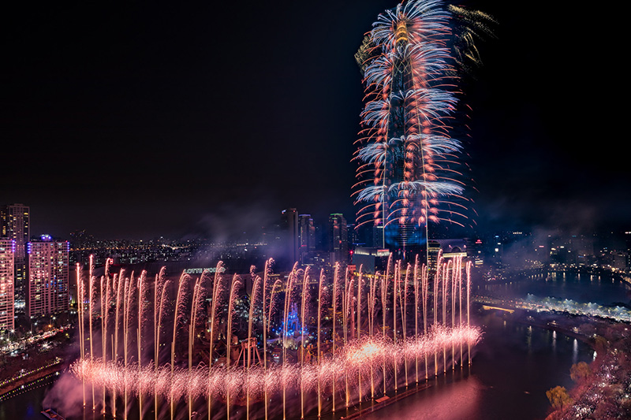

Lotte World Tower (kor. 롯데월드타워) – wieżowiec w Seulu, w Korei Południowej o wysokości 555 m. Został otwarty 3 kwietnia 2017 i jest najwyższym budynkiem w kraju. Jest obecnie najwyższym budynkiem w Korei Południowej i 6. najwyższym budynkiem na świecie